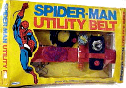

PsiPog.net
Telepathic Linking and Scanning
by annie
The intent of this article is to discuss Telepathic Linking and Scanning: methods, uses, and what to expect. Further questions may be directed towards myself or any of the moderators at the PsiPog forums or the PsiPog chat.
What is telepathic linking? The name is pretty self-explanatory. It is a psi link between two persons for purposes such as but not limited to: telepathic conversation, empathic knowledge, scanning for psi signatures, empathy scanning, sending/receiving random information, discerning if someone is telling the truth, planting telepathic suggestion or programming (Note: Do NOT ask me about planting programming in someone else. You will receive a rude, yet witty reply), the list goes on and on.
What does it feel like? That's a tougher one to answer. It's similar to trying to explain to a blind person what the sky looks like. And while I hate to sound cliche, all I can really say on this one is - if you have to ask what it feels like, you aren't doing it. You'll know you've done it successfully, once you've done it successfully.
So, how do I accomplish a telepathic link with someone? Ah, I thought you'd never ask. While visualization is not the answer, it is a helpful tool to your subconscious. So, I'm going to go over some popular visualization techniques that have either been useful for myself or someone I know. First I will cover the "tendril" technique. This is the most common visualization of which I'm aware. For those of you who aren't familiar with it, it goes something like this:
Relax, as with all first time practices this is important. Meditate, if that's your cup of tea - whatever it takes to put you in the relaxed state of mind. Once you're there, do some basic energy manipulation. Put up a wall up psi around your body; jump some energy between your hands or fingers. Basically get comfortable moving psi around. Now that you've done this for about five minutes, it's time for the visualization to come into play. Visualize the psi you're been playing with for the past five minutes shooting out from you. Some people visualize it shooting out from their sternum, some who use chakras as a tool picture it coming from where they think the third eye to be, others don't pinpoint the spot but rather just shoot it out from wherever it will shoot. You should know at least a little about your practice partner/target, as this appears to help your subconscious find the goal with more ease. I don't know why this is; ask your subconscious, not me. So, have your target in mind and shoot that stream of psi towards him/her. Imagine it sticking right to them, like sticky slime. Send more energy through the link you've made. Think you've sent enough? Send more. Got enough now? Send MORE. Triple the amount you've already sent. Then send more. Think you're out of psi to send? SEND MORE. Ok Ok.
By this time you should be feeling the link. Sit back for a minute and just become acquainted with the feeling. Know it, love it, be able to do it again. You may even be smart to just practice doing this a few times for the first run. Then let your partner give it a turn.
|  |
It's now time to start trying to do some scanning. To start we'll do some basic psi signature scanning. I'm going to cover some of the same material as in the other article I've written - "What is a psi signature and how do I scan for one?" -- But I ask that you read both articles before you begin practice. Since you've gotten comfortable creating a telepathic link already, scanning someone should be relatively easy. Start by creating that link. Sit with the link for 2-3 minutes before trying to scan. Make sure it's steady and strong - a constant flow of psi between you and your target. Now, start trying to pull information down the rope. It doesn't matter what kind of information. Anything that comes to you. It can come in the form of images, symbols, audio, emotions/feelings, and color to name a few. Try not to stick too much with color, though, as I've found this tends to get people hung up and stuck. I usually go for the feelings and emotions first. Pull them down the link. I do this, as I find getting their state of mind beforehand helps me to better interpret the other random information I may receive. Next I poke around for symbols or archetypes. [Note: Please see Myriad's Empathy Seminars (articles deleted) for more in depth explanation of archetypes.] Once you've accomplished getting a state of mind and a few archetypes under your belt, just relax and let any other random information that they may be sending come to you. This takes practice. Don't get discouraged if after three tries you don't receive much or any information. Keep at it, and find me in the chat if you have more specific questions.
At this point, I think it's necessary to discuss shielding. There are many excellent articles here at PsiPog on the subject, so I won't rewrite them here. If you don't want yourself scanned by random strangers, though, I suggest looking into the Hedge Shield. Or perhaps the Reflective Shield. Bounce their link right off of you. Most smart psychics/psions/whatever won't go probing into someone who is shielded. Expect no mercy from your shielded target if you do so.
Articles I recommend on the subject:
An Introduction to Psionic Shielding - by Rainsong
General Outline to Shielding - by Unknown
To close this article, we'll talk about disconnecting or breaking the telepathic link. I often hear people say they don't know how. It's really very easy. Take the "tendril" and shake it off of them. Bring the energy that you created back to you. If you can control it enough to send out, you can certainly control it enough to bring home. Again, for specific questions, please post on the forum or find me in the chat. Thanks for reading.
Annie
Click here for printable version
Last Modified on November 11 2002
All Content, Images, Video, Text, and Software is © Copyright 2000-2006 PsiPog.net and their respective authors. All Rights Reserved.
You must agree to the Terms of Service and Privacy Policy to view this website. Click here to contact the webmaster.